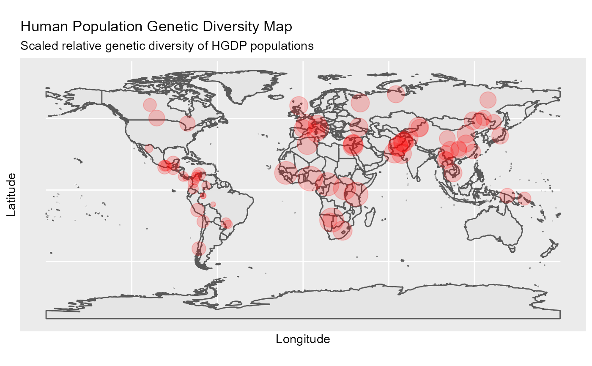

ggDivgeomap.RdPlotting diversity profiles on a map. The genetic diversity profiles can be calculated using HierDq or HierDq_genlind function.
ggDivgeomap(data,x,y, scale = "medium", returnclass = "sf", size, title = "Global Genetic Diversity Map", subtitle = ("Scaled relative genetic diversity of HGDP populations"), ...)
| data | The dataframe contains the longitude, latitude, and the geographic coordinates of the location. |
|---|---|
| x | The longitude of the location. |
| y | The latitude of the location. |
| scale | scale of map to return, one of 110, 50, 10 or 'small', 'medium', 'large' |
| returnclass | 'sp' default or 'sf' for Simple Features |
| size | The point size used to indicate the (relative) diversity. |
| title | Tittle of the plot, text. |
| subtitle | Subtitle of the plot |
| ... | Aesthetic passing to ggplot |
There are four ways of plotting geographic map in this package. "ggDiversity" uses ggplot2 and rnaturalearth.
A geographic map with points (size indicates diversity value) and densities.
Wickham, H. (2011). ggplot2. Wiley Interdisciplinary Reviews: Computational Statistics, 3(2), 180-185.
South, A. (2017). Rnaturalearth: world map data from natural earth. R package version 0.1. 0.
Qin, X. (2019). HierDpart: partitioning hierarchical diversity and differentiation across metrics and scales, from genes to ecosystems. R package version 0.5. 0 https://cran.r-project.org/package=HierDpart.
qinxinghu@gmail.com
#Load data data(Dprofile) ##plot ggDivgeomap(data = Dprofile,x=Dprofile$Longitude, y= Dprofile$Latitude, scale = "medium", returnclass = "sf",size=normalize(Dprofile$Dq1)*10, title="Human Population Genetic Diversity Map", subtitle=("Scaled relative genetic diversity of HGDP populations"))